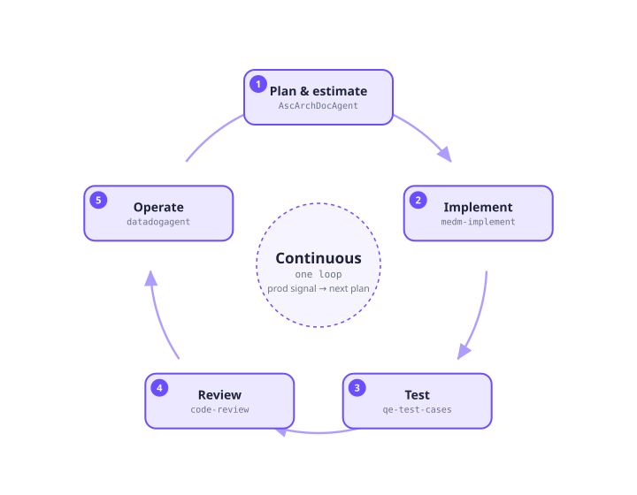
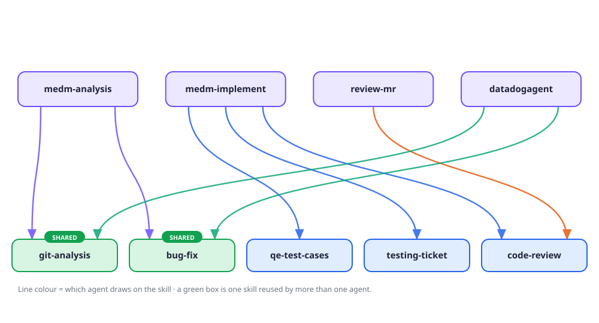
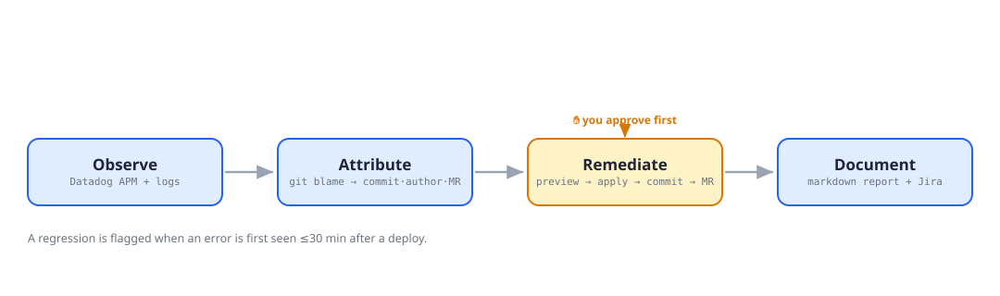

Engineering productivity
AI that ships software, not just features inside it.
A suite of custom Copilot agents that assist across the delivery lifecycle — from planning through implementation, testing, review, and production triage. Every one keeps a human in the loop.
Two bets on AI
Bet one — in the product
AI our customers touch
The eight prototype demos: adaptive simulation, study copilots, mastery engines.
Bet two — in how we build
AI our engineers ship with
This suite: agents embedded in writing, testing, and running code — one tab each →
Across the lifecycle
- 01Plan & estimate
AscArchDocAgent - 02Implement
medm-implement - 03Test
qe-test-cases - 04Review
code-review - 05Operate & triage
datadogagent
The through-line
The agents share skills and hand off to each other — one family covering every phase, not three disconnected tools.
Plan · Estimate · Spec
Architecture & Planning Agent
Answers "what will this take?" with evidence pulled from real code, Arch Web, and Confluence — not a gut feel.

Why it matters
Owns the Plan & estimate phase: dual with-AI vs without-AI effort, a confidence score on every plan, and a build-ready OpenSpec a coding agent can run — estimation stops being guesswork.
Build · Test · Review
MedHub Coding Agent
Carries a MEDM ticket from intake to closure — pre-loaded with MedHub architecture, standards, and workflows so developers stop re-explaining context.

Why it matters
Bug investigation, implementation, test generation, accessibility, and code review — one agent that already knows MedHub architecture, standards, and workflows, so context isn't re-explained every session.
Observe · Attribute · Remediate
Production Triage Agent
Collapses a five-tool HTTP-500 investigation into a single chat — no tab switching, no copy-pasting between Datadog, the IDE, the terminal, and GitLab.

Why it matters
From alarm to attributed fix in minutes instead of a cross-tool scavenger hunt — the introducing commit, author, and MR surface automatically, and nothing is written until you approve.
datadog-analysis · git-analysis · bug-fix · Two demo sessions recorded with the MedHub team (Feb & Apr 2026).